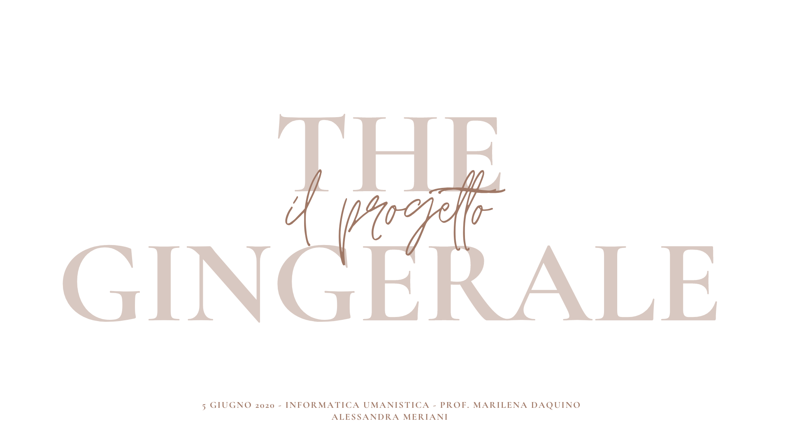
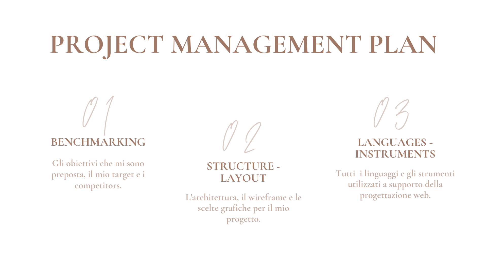
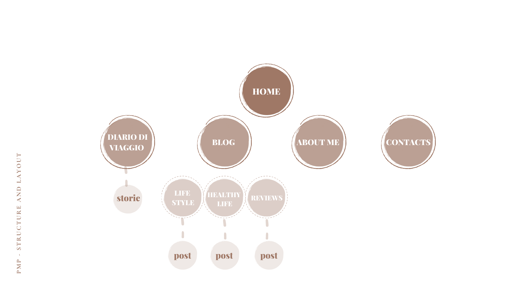
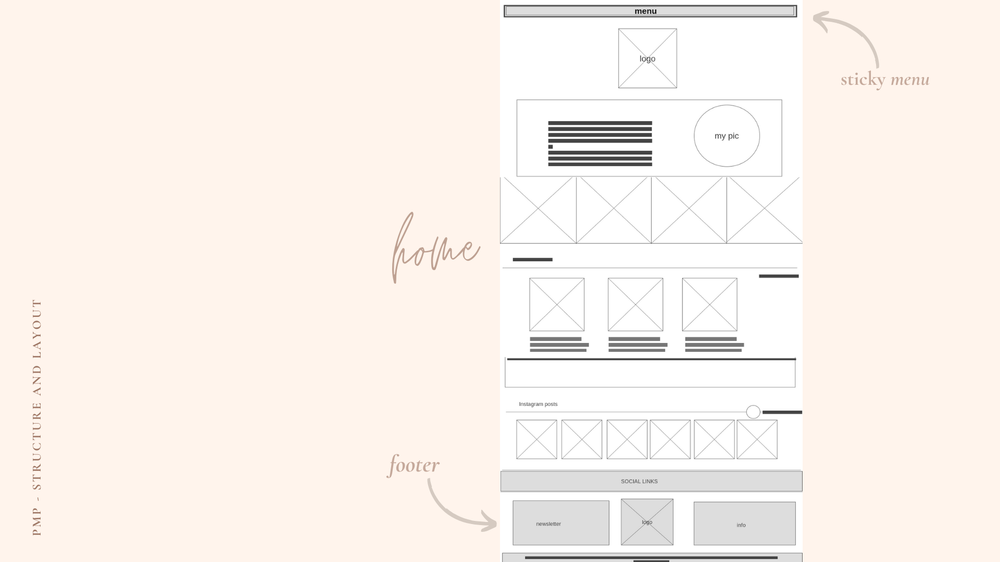
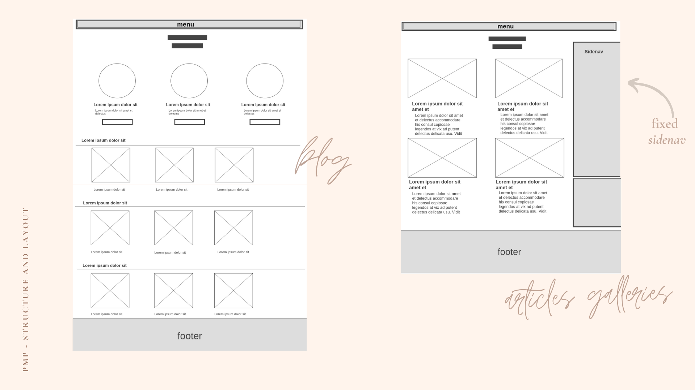
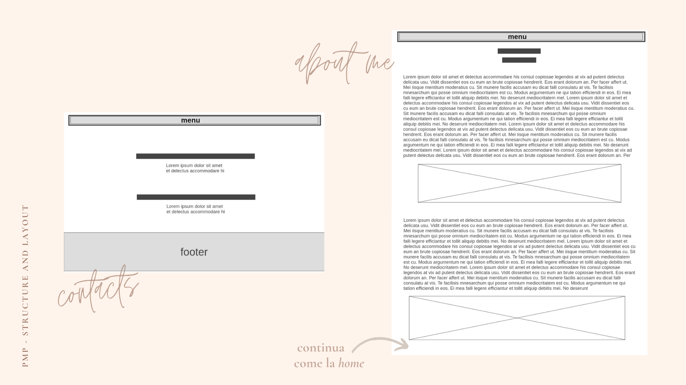
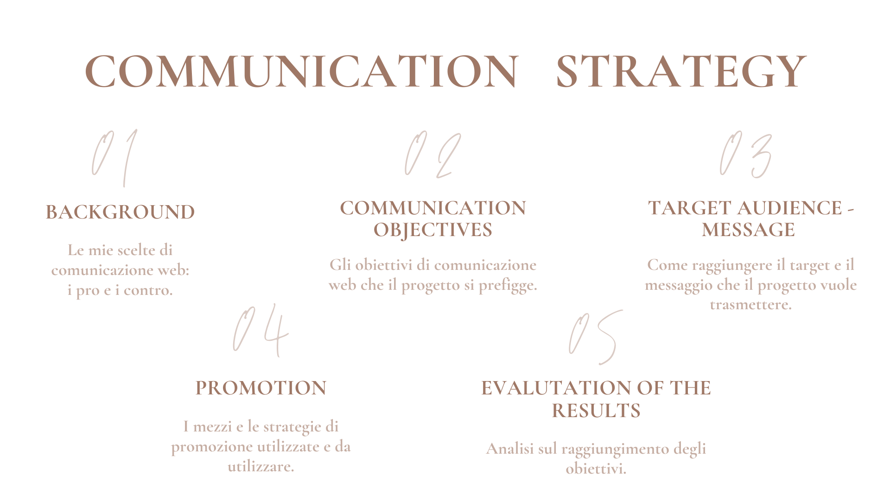
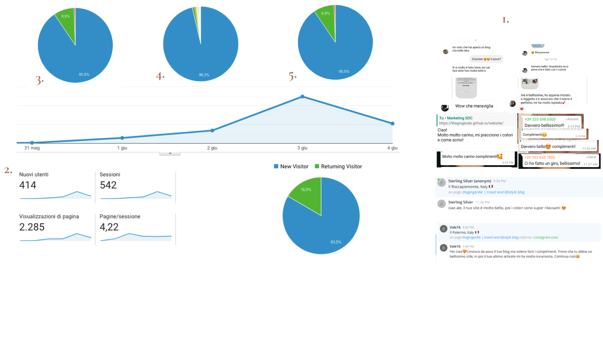

Abstract:
il mio progetto
"The gingerAle" è un sito dai colori tenui e dalla grafica lineare che nasce con l'intento di creare uno spazio di positività e ispirazione, in un periodo in cui queste sensazioni sono fondamentali.
Il progetto si rivolge ai giovani interessati a viaggi, lifestyle e sostenibilità. Il sito è costruito in base alle esigenze del target: risulta responsive per mobile e permette una grande interazione attraverso i social.
Chi entra all'interno del sito non si limita ad una fruizione passiva: può mandare mail ad un indirizzo di posta riservato e ha anche la possibilità di aprire una liveChat diretta con me.
Il progetto si rivolge ai giovani interessati a viaggi, lifestyle e sostenibilità. Il sito è costruito in base alle esigenze del target: risulta responsive per mobile e permette una grande interazione attraverso i social.
Chi entra all'interno del sito non si limita ad una fruizione passiva: può mandare mail ad un indirizzo di posta riservato e ha anche la possibilità di aprire una liveChat diretta con me.

Benchmarking:
gli obiettivi
1. creare uno spazio personale nel quale raccontare di me e delle mie passioni.
2. fare in modo che un gran numero di potenziali utenti del target arrivino a conoscere il mio sito.
2. far appassionare e ispirare i lettori; ottenere degli utenti abituali.
il target primario
- Il progetto si rivolge maggiormente a utenti italiani appartenenti ad una fascia di età tra i 16 e i 30 anni, interessati ad argomenti quali viaggi, sostenibilità e lifestyle.
i competitors
fraintesa.it
pro: i contenuti sono validi e di qualità; offre la possibilità di collaborazioni; gli argomenti sono ben definiti.
contro: è un po' monocromatico: oltre al nero e al grigio, il verde appare solo nel logo; c'è la possibilità di iscriversi alla newsletter, ma ci si arriva solo dalla pagina di about.
uptowngirl.it
pro: chiara identità del soggetto del sito;l'utente può interagire con un comment box; sono inserite alcune foto del feed di instagram; il sito è responsive.
contro: la home è un po' confusionaria; non sono ben definite le aree dei contenuti trattati; la font-size è troppo piccola: la lettura non è scorrevole.
soniapaladini.it
pro: la grafica è molto curata e intuitiva; le immagini e i contenuti sono di qualità.
contro: la pagina del portfolio non è responsive; il font scelto per gli articoli non è molto chiaro.
Structure and layout:
l'architettura

il wireframe



look and feel
- Per la favicon e altri dettagli del sito è stato usato un giallo ocra ( #f2ca80 ); mentre per il resto della grafica sono stati scelti colori tenui come il rosa, in diverse gradazioni ( #fff4ec #f7dfd5 #e89f9b ) e il grigio ( #c0c0c0 ). Anche il nero e il bianco sono colori predominanti del sito.
- Per quanto riguarda la scelta delle font-family, per il navigation bar è stato scelta bellota text, per i button montserrat, per i titoli di pagina h1 e di paragrafi h2 Cardo, Playfair Display e Sacramento, per i paragrafi Hind Madurai.
Languages and instruments:
linguaggi web
HTML, CSS e JavaScript per la programmazione web.
strumenti tecnologici
Sublime Text 2 come text-editor per la programmazione;
GitHub come servizio di hosting per il progetto;
Google Fonts come libreria di font con licenza libera;
Adobe Color per creare la color palette;
Photoshop per creare il logo e le altre grafiche;
FontAwesome come toolkit di icone con licenze libere;
Unsplash per alcune immagini come quella della parallax;
Mailchimp come piattaforma di automazione per le newsletter;
AddToAny come plugin per gli share buttons;
Chatra come piattaforma per il servizio di liveChat;
Google Analytics per il monitoraggio del sito.

Background:
Sulla base del BENCHMARKING effettuato, ho identificato i pro e i contro della comunicazione web dei competitors:
PRO: i contenuti sono vari ed eterogenei e la quantità degli argomenti è molto vasta; sono tutti arricchiti con molte immagini; alcuni offrono un servizio di interazione con l'utente con la possibilità, da parte di quest'ultimo, di inviare commenti o di iscriversi alla newsletter; due siti in particolare (soniapaladini.it e uptowngirl.it) danno un'idea ben chiara dell'identità del soggetto.
CONTRO: la vasta offerta dei contenuti rende alcuni siti molto dispersivi, poco chiari e poco intuitivi, a discapito di un'user-experience positiva; solo un sito (soniapaladini.it) ha soprattutto fotografie personali, mentre gli altri propongono immagini del web; i servizi di interazione spesso non sono ben visibili o raggiungibili: un'utente che non punta ad iscriversi o a commentare, tenderebbe a non notarli.
Communication objectives:
1. DIGITAL IDENTITY Costruire un brand incentrato sulla persona, rendere la grafica accattivante e definire in modo chiaro gli argomenti di cui trattare.
2. LINK BUILDING Fare in modo che altri siti con target simile pubblichino il link in ingresso, pubblicizzare il sito attraverso i miei social.
3. SOCIAL NETWORK Creare collegamenti bidirezionali tra il mio sito e i social networks.
4. INTERAZIONE CON L'UTENTE Incrementare l'interazione con l'utente, puntando ad una comunicazione diretta.
5. USER JOURNEY Permettere agli utenti di esperire una customer journey soddisfacente e di cogliere il messaggio.
2. LINK BUILDING Fare in modo che altri siti con target simile pubblichino il link in ingresso, pubblicizzare il sito attraverso i miei social.
3. SOCIAL NETWORK Creare collegamenti bidirezionali tra il mio sito e i social networks.
4. INTERAZIONE CON L'UTENTE Incrementare l'interazione con l'utente, puntando ad una comunicazione diretta.
5. USER JOURNEY Permettere agli utenti di esperire una customer journey soddisfacente e di cogliere il messaggio.
Target:
target primario
Il progetto si rivolge maggiormente a utenti italiani appartenenti ad una fascia di età tra i 16 e i 30 anni, interessati ad argomenti quali viaggi, sostenibilità e lifestyle.
Questo target è raggiungibile tramite il web e i social network preferiti (es. Instagram, Pinterest), ma anche tramite reti di conoscenze (gruppi whatsapp, passaparola).
Si tratta di un'audience molto esigente, con alte aspettative riguardo ai contenuti, al web design, all'usabilità e alle prestazioni.
target secondario
Tra gli utenti che possono essere attratti dal progetto vi sono anche persone che, pur non rientrando nella fascia di età definita (over 30), sono interessati ai contenuti proposti.
Message:
l messaggio che porta avanti il progetto è quello di far comprendere l'importanza delle "piccole cose", del benessere personale mentale e fisico.
"ThegingerAle", attraverso contenuti visivi e verbali, punta ad ispirare e dare positività al fruitore, in un periodo nel quale queste sensazioni spesso tendono a mancare.
Il sito, però, non vuole essere solo un luogo di lettura unidirezionale, bensì uno spazio aperto ai commenti, alle idee e all'ascolto.
"ThegingerAle", attraverso contenuti visivi e verbali, punta ad ispirare e dare positività al fruitore, in un periodo nel quale queste sensazioni spesso tendono a mancare.
Il sito, però, non vuole essere solo un luogo di lettura unidirezionale, bensì uno spazio aperto ai commenti, alle idee e all'ascolto.
Promotion:
online
- Il progetto è stato promosso sui social, in particolare su Intagram, Pinterest e Whatsapp.
- Alcuni blog che si rivolgono ad un target molto simile hanno parlato o mostrato il mio progetto sui loro social.
- Sono in programma delle collaborazioni con questi stessi blog.
offline
- Il progetto si presta bene ad essere promosso su giornali o riviste che trattino gli stessi argomenti del sito.
Valutazione dei risultati:
*i dati numerici sono stati rilevati da Google Analytics; i feedback sono stati ricevuti sulla piattaforma di liveChat, sulla mail del sito e sui social.
DIGITAL IDENTITY - ho ricevuto molti feedback positivi riguardo alla grafica e ai contenuti del sito, anche da persone che non mi conoscevano (fig. 1).
LINK BUILDING - in soli 3 giorni, grazie al link building, più di 400 utenti hanno raggiunto il sito (fig. 2).
SOCIAL NETWORK - nuovi utenti del sito hanno iniziato a seguire il mio profilo Instagram e viceversa; alcuni post sono stati condivisi (su Pinterest); molti nuovi utenti hanno raggiunto il sito dai social (fig.3).
INTERAZIONE CON L'UTENTE- grazie al servizio di newsletter, alla mail e alla possibilità di scrivere in tempo reale sulla liveChat, è stata riscontrata una grande interazione da parte degli utenti (fig. 1).
USER JOURNEY - dai tanti feedback positivi ricevuti, dal numero di returning visitors (16.5%) e dal tempo medio di sessione (più di 3 min) sembra che la maggior parte degli utenti abbia avuto una user-experience soddisfacente.
TARGET AUDENCE - si può dire che il target primario è stato raggiunto: la stragrande maggioranza degli utenti hanno visitato il sito dall'Italia (fig. 4) e da mobile (fig. 5).
MESSAGGIO - credo che il messaggio preposto sia arrivato all'utente: ho ricevuto messaggi positivi che mi hanno molto colpito, soprattutto quelli da persone che non mi conoscevano. Molti hanno detto che continueranno a seguirmi e ben 50 persone si sono iscritte alla newsletter del sito.
DIGITAL IDENTITY - ho ricevuto molti feedback positivi riguardo alla grafica e ai contenuti del sito, anche da persone che non mi conoscevano (fig. 1).
LINK BUILDING - in soli 3 giorni, grazie al link building, più di 400 utenti hanno raggiunto il sito (fig. 2).
SOCIAL NETWORK - nuovi utenti del sito hanno iniziato a seguire il mio profilo Instagram e viceversa; alcuni post sono stati condivisi (su Pinterest); molti nuovi utenti hanno raggiunto il sito dai social (fig.3).
INTERAZIONE CON L'UTENTE- grazie al servizio di newsletter, alla mail e alla possibilità di scrivere in tempo reale sulla liveChat, è stata riscontrata una grande interazione da parte degli utenti (fig. 1).
USER JOURNEY - dai tanti feedback positivi ricevuti, dal numero di returning visitors (16.5%) e dal tempo medio di sessione (più di 3 min) sembra che la maggior parte degli utenti abbia avuto una user-experience soddisfacente.
TARGET AUDENCE - si può dire che il target primario è stato raggiunto: la stragrande maggioranza degli utenti hanno visitato il sito dall'Italia (fig. 4) e da mobile (fig. 5).
MESSAGGIO - credo che il messaggio preposto sia arrivato all'utente: ho ricevuto messaggi positivi che mi hanno molto colpito, soprattutto quelli da persone che non mi conoscevano. Molti hanno detto che continueranno a seguirmi e ben 50 persone si sono iscritte alla newsletter del sito.
